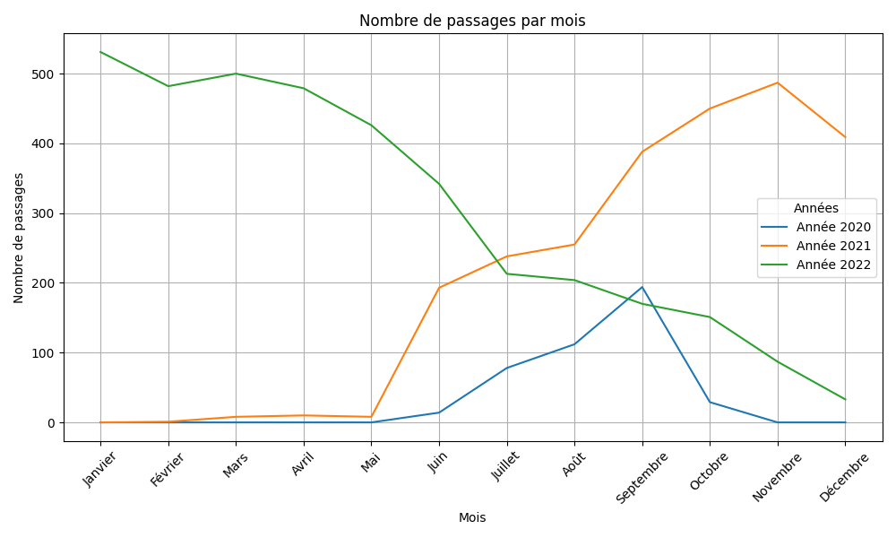
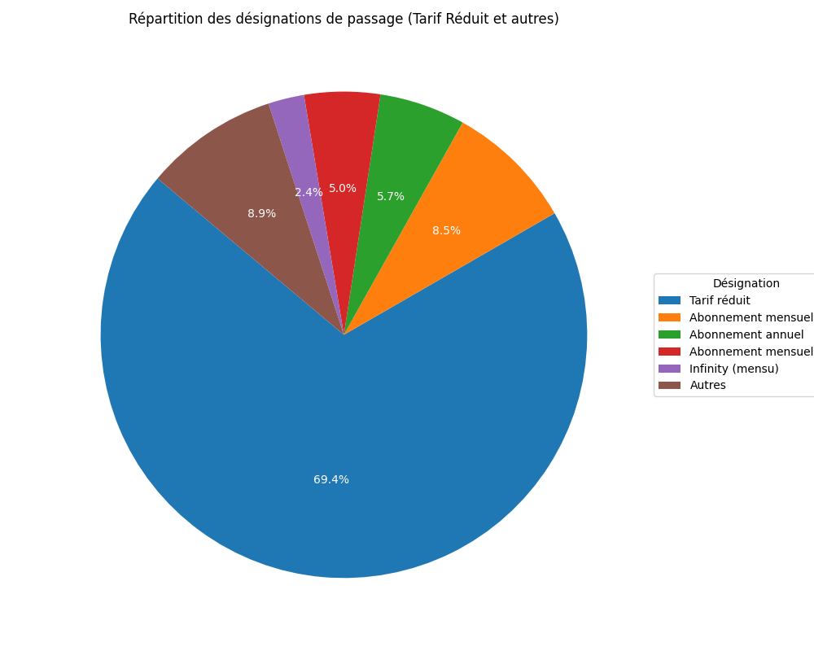

Analyse des passages - Arsoke
Entreprise d'escalade • Analyse de données clients
Analyse complète des données de passages des adhérents d'Arsoke, une entreprise d'escalade. J'ai développé des tableaux de bord interactifs pour suivre l'évolution des passages mensuels et identifier les clients inactifs, permettant une meilleure gestion de la fidélisation.
Objectifs :
- Analyser les tendances de fréquentation mensuelle
- Identifier les clients inactifs depuis plus de 6 mois
- Segmenter les clients par type d'abonnement
- Fournir des insights actionnables pour la rétention
Power BI
SQL
Excel
DataViz

Évolution des passages mensuels (2020-2022)

Clients inactifs depuis plus de 6 mois

Répartition des désignations de passage

Proportion des désignations abonnement et forfait
Résultats obtenus :
- Identification de 14 clients inactifs depuis plus de 6 mois
- 69.4% des passages concernent le tarif réduit
- 81.1% des clients utilisent des abonnements
- Recommandations pour améliorer la rétention client